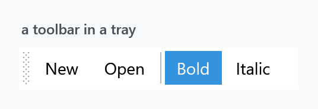
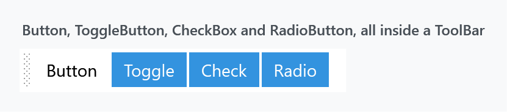
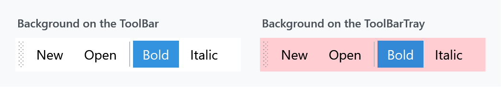
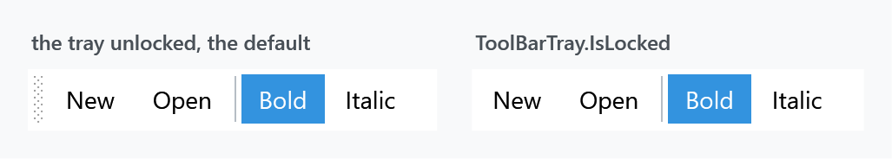

Two implicit styles — the bar and the tray it sits in — plus a set of styles for the controls that go inside one, which WPF applies for you through its own style keys.

<ToolBarTray>
<ToolBar>
<Button Content="New" />
<Button Content="Open" />
<Separator />
<ToggleButton Content="Bold" IsChecked="True" />
<ToggleButton Content="Italic" />
</ToolBar>
</ToolBarTray>
Styles/Controls.xaml applies MahApps.Styles.ToolBar and MahApps.Styles.ToolBarTray, so the quick start is the whole setup.
Controls inside a toolbar are restyled for you
A ToolBar re-styles its children through eight style keys that WPF looks up by name. MahApps fills in six of them:
| WPF key | MahApps style |
|---|---|
ToolBar.ButtonStyleKey |
MahApps.Styles.Button.ToolBar |
ToolBar.ToggleButtonStyleKey |
MahApps.Styles.ToggleButton.ToolBar |
ToolBar.CheckBoxStyleKey |
MahApps.Styles.ToggleButton.ToolBar |
ToolBar.RadioButtonStyleKey |
MahApps.Styles.ToggleButton.ToolBar |
ToolBar.TextBoxStyleKey |
MahApps.Styles.TextBox |
ToolBar.ComboBoxStyleKey |
MahApps.Styles.ComboBox |
Note rows three and four: a CheckBox or a RadioButton dropped into a toolbar is given the toggle button style. It loses its box or its dot and becomes a button that stays pressed:

All four items in that figure are different control types, and three of them look identical because three keys point at the same style.
That is WPF's behaviour, not a MahApps decision. The stock Aero theme maps CheckBoxStyleKey and RadioButtonStyleKey to the same toolbar button appearance, so a check box in a plain WPF toolbar loses its tick as well — MahApps only supplies its own look for it. A toolbar wants latching buttons, the way Bold and Italic work, so if you need a visible tick or dot, put the control next to the toolbar rather than in it.
ToolBar.MenuStyleKey and ToolBar.SeparatorStyleKey are the two MahApps leaves alone, so a Menu or a Separator inside a toolbar keeps WPF's own look. The separator is a plain vertical line, which fits; a Menu is worth styling yourself if you put one there.
Background belongs on the tray
Setting Background on a ToolBar does nothing. The template's root border hardcodes both its brushes:
<Border x:Name="Border"
Background="{DynamicResource MahApps.Brushes.Transparent}"
BorderBrush="{DynamicResource MahApps.Brushes.Transparent}"
BorderThickness="1"
CornerRadius="2">
Neither is a TemplateBinding, so Background and BorderBrush on the control are ignored. The colour behind a toolbar is the tray's:

<ToolBarTray Background="{DynamicResource MahApps.Brushes.Gray10}">
<ToolBar>
<!-- items -->
</ToolBar>
</ToolBarTray>
MahApps.Styles.ToolBarTray is one setter — a Background of MahApps.Brushes.Window.Background — so that is the only place the colour comes from unless you change it.
To colour a single bar rather than the whole tray, base a style on MahApps.Styles.ToolBar and replace the template, or put the bar in a tray of its own.
The drag grip

The dotted grip on the left is a Thumb with a SizeAll cursor, and it is what lets the user drag a bar to another row of the tray. ToolBarTray.IsLocked collapses it:
<ToolBarTray IsLocked="True" />
The template also disables the grip while the overflow popup is open, so a bar cannot be dragged out from under its own menu.
Overflow
When the bar is narrower than its items, the ones that do not fit move into a popup behind a chevron at the right-hand end. That button is MahApps.Styles.ToggleButton.ToolBarOverflow; it is disabled while HasOverflowItems is false, so it only lights up when there is something to show.
The popup itself is a bordered panel in MahApps.Brushes.Control.Background with a ToolBarOverflowPanel that wraps at 200 units. Mark an item as always overflowing, or never, with WPF's own attached property:
<Button Content="Rarely used" ToolBar.OverflowMode="Always" />
Related
The toolbar button styles are variants of the ones on the Buttons page, and the text box and combo box inside a toolbar are the ordinary TextBox and ComboBox styles.